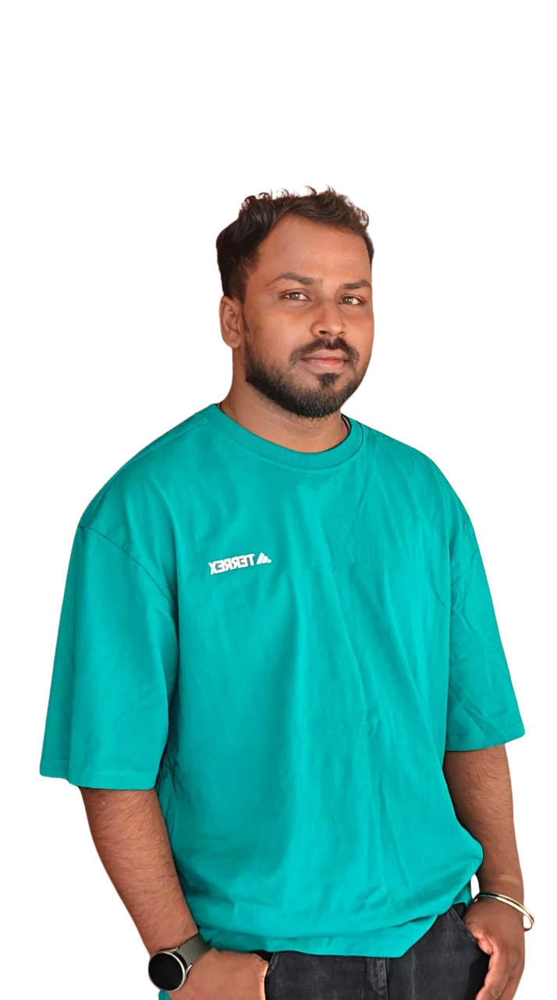

MANIGANDAN
MURUGAN
Integration Developer & Java Backend Engineer
Specializing in Spring Boot, Microservices, and Cybersecurity integrations. Building scalable, reliable, and secure solutions that process millions of records with minimal memory overhead.

The Heavy Lifting
Engineering solutions built for scale, resilience, and complex security data ingestion.
Zero-to-One Builds
Architected and built critical connectors entirely from scratch in Java 8/11. Includes Google Threat Intelligence (handling 34 distinct models), Halo Security, and Akto connectors, mapping complex vendor APIs directly to unified data models.
Scale & Optimization
Engineered high-volume data ingestion. Optimized the Checkmarx integration to sync ~1M records reliably. Profiled and refactored the Rapid7 Nexpose connector, cutting heap memory usage drastically from 80MB down to 10-30MB.
Domain Expertise
Deep understanding of vulnerability management and threat intelligence. Successfully mapped complex scoring metrics including CVSS v2/v3/v4, EPSS, CISA KEV, and CWE across the Unified Data Model (UDM) for accurate risk prioritization.
Featured Projects & Builds
Custom cybersecurity connectors built from scratch & high-scale production performance tuning.
Google Threat Intelligence (GTI)
Engineered an enterprise threat intelligence and ASM integration from scratch. Built 34 models (including 27 External Attack Surface Management asset types) with VirusTotal v3 API surfaces, supporting full & incremental sync via sync tokens.
Key Engineering Highlights:
- Enriched data with CVSS v2/v3/v4, EPSS, CISA KEV, and CWE metrics.
- Diagnosed & resolved Jackson/SLF4J transitive dependency classpath conflicts taking down all 34 models.
Akto API Security Connector
Built API security integrations for API collections, endpoints, DAST findings, and test definitions. Architected to compile cleanly across two framework generations (Java 8 for 10x platforms, Java 11 for 11x/12x).
Key Engineering Highlights:
- Parallelized endpoint ingestion using
ForkJoinPoolworker threads. - Implemented local disk-backed storage (
SimpleKVStore) to cache and reuse collection feeds across models.
Halo Security Integration
Designed and built a 4-model EASM integration covering Hosts, Scans, Issues, and Issue Definitions, merging instance records directly into unified vulnerability models.
Key Engineering Highlights:
- Integrated Guava
RateLimiterto eliminate HTTP 429 rate-limit failures on issue detail calls. - Implemented configurable offset pagination with exponential backoff retries.
High-Volume Scale & Heap Tuning
Targeted performance refactoring across high-volume production connectors to eliminate heap exhaustion, reduce runtime, and repair software inventory identity logic.
Key Achievements:
- Rapid7 Nexpose: Reduced heap usage from ~80MB down to 10–30MB by replacing disk-backed storage with flat in-memory maps.
- Checkmarx One: Optimized ingestion at ~1M records/sync, reducing processing duration from 5-8 hours.
- Qualys Package Normalization: Rewrote CPE key generation to eliminate duplicate record collapses caused by degenerate
cpe:/awildcards.
Engineering Workflow
End-to-End Connector Lifecycle: From 3rd-party API analysis to automated customer-facing CHANGELOG generation.
1. Intake, Analysis & Design
Pre-Code Architecture
Architectural Design: Proved API feasibility and rate limits using Postman before writing any code. Mapped vendor objects to the Unified Data Model (UDM), designed Jackson/Immutable DTOs, and authored the Docs-standard README to settle model boundaries early.
2. Core Implementation
Java 8/11 Engineering
Code Engineering: Engineered the connector logic, implementing complex pagination (cursor/offset/POST), rate limiting, and retry backoffs. Authored the customer-facing CHANGELOG, determining exact migration impacts (e.g., purge-and-resync notes).
3. Testing & QA Specs
Offline & Live Validation
Quality Assurance: Built offline integration tests using MockWebServer with mocked JSON/XML fixtures. Executed local live-API syncs and authored the strict, 7-part QA Validation Spec to define exact expected record counts and delta-sync behavior for QA engineers.
4. CI/CD & Instance Verification
Pre-PR Checks & Deployment
Pipeline Execution: Ran OWASP Dependency-Checks and Spotless formatting via the custom Antigravity skill pack. Triggered Jenkins snapshot builds and deployed them to 11X instances to verify real-data ingestion, list views, and operation options before raising PRs.
5. Review, Validation & Release
Customer Sign-off & Publication
Release Ownership: Managed peer code reviews and drove customer validation by deploying snapshots directly to their instances. Handled the Jenkins Maven release sequence (tag/version bump) and verified the automated publication of the connector pages to the official api documentation.
Technical Toolkit
A quick reference grid of the technologies, frameworks, and patterns used across my work.
Core Backend
Integration
Data & DevOps
Testing
INITIATE CONNECTION
Currently open to discussing new opportunities in backend development, systems integration, and cybersecurity engineering.